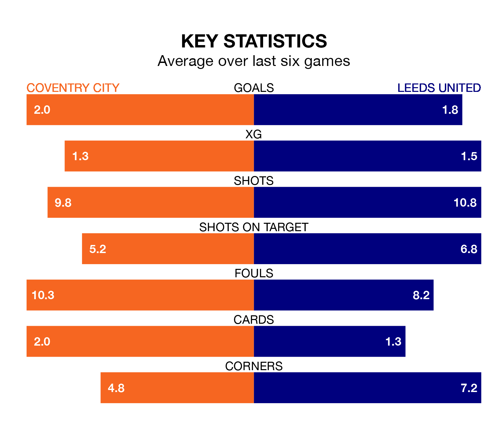

Leeds United are strong favourites to take all three points despite Coventry City's home advantage in Saturday's match at the Coventry Building Society Arena.
*Betting Company* are offering odds of 1.97 on Leeds sealing the win, with the visitors sitting second in EFL Championship table.
Coventry, who are seventh in the league and 26 points behind Leeds, are priced at 3.25 to win. A draw is set at 3.75.
With 75 goals in 40 games so far this season, Leeds are scoring more than average in the league with 1.9 goals per game. And they are conceding fewer than average, letting in 31 goals at a rate of 0.8 per game.
Coventry are also above average scorers, with 1.6 goals per game, compared to a league average of 1.4. They have conceded 1.2 goals per game.
With Illan Meslier between the sticks, United can rely on one of the league's safest pair of hands. He has kept 17 clean sheets in his 38 appearances this season, and no 'keeper has prevented the opposition scoring more often in EFL Championship.
In City's net, Bradley Collins has seven clean sheets in 21 games. He has conceded a goal every 99 minutes, 30% more often than the 130 minutes between goals for Meslier.
The Sky Blues are in mixed form in EFL Championship, with three wins and three losses from their last six games.
With four wins and two draws over that period, the away side's form is better – they have taken 14 points from 18, compared to the hosts' nine.
Coventry's last match was on Monday, a 2-1 loss against Cardiff City, with Ellis Simms getting the goal for the Sky Blues.
Leeds beat Hull City 3-1 last time out, also on Monday, with Crysencio Summerville, Daniel James and Sam Byram on the scoresheet.
Saturday's match will be refereed by Tom Nield, who has taken charge of 10 EFL Championship games so far this season, issuing no red cards and booking 40 players. He has awarded one penalty.
The last Coventry game Nield refereed was a 3-1 away win against Queens Park Rangers on September 30. He is yet to oversee a match featuring Leeds this season.
Updated: 16:41 (UTC), 04/04/24